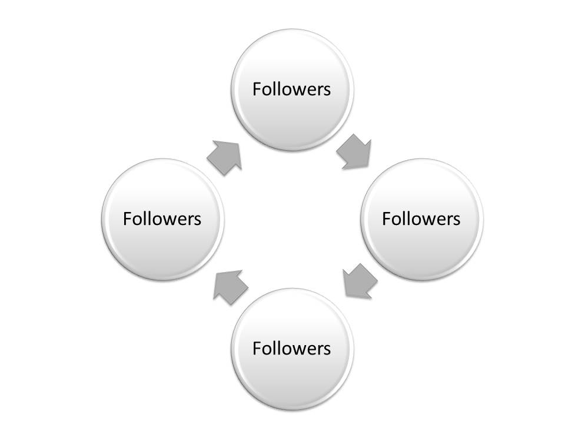

What is the concept Leadership?
Leadership is that single factor tht differentiate between successful and unsuccessful organization it could be considered as dymanic and effective leadership. It is the intergal part of management. It is the process by which executive imaginatively directs guide and infulence the work of others in choosing and attaining specified goals.It is also psychological process. It involves inspiring, directing, guiding, and motivating a mass of people to work together in order to achieve a specific goals. Leadership is the ability to motivate and influence people to work to achieve a common goals. Leaders must be able to communicate effectively and develop trust and commitment amongst their followers. Leadership is also about being able to solve problems and make decisions. Leaders must have the ability to develop and maintain relationships with employees, as well as must have skills to take the company or business at top level. Leadership happpens in all level like communuty and socity not only in business.
Types Of Leadership
Autocratic Leadership
Autocratic leadership is the management in which one person makes all the decisions without consulting anyone else.
This leadership is often seen as a negative because it lacks collaboration and unmanage.
It is mostly used in emergency situations or to make quick decision.
Learder exercise complete control ever the subordinates.
In this types of leadership it is the only one with authority, and all decisions are made without consulting anyone else.
This can lead to a lack of creativity and innovation.
It may lead to high turnover, as employees may feel unappreciated and undervalued and main important it main causes conflicts.
In short, this is single person handled leadership style.This types is good in centain situations like
emergency and quick decision making that's it. It's can damage in others situations like time-orintated projects where
needed multiple members.

Democratic Leadership
This is consultative style. In this style leader always involves the subordinates in decision making process including setting up the goal to be achieved, authority is delegated. Its is two ways communication. In this democratic leadership style authority and responsibility is fully accepted and encourage productivity and cretivity. It's know as two way communication. It is fuly focus on result rather then on action. Democratic leadership is a form of leadership in which mass of people are participated in decision-making. it is associated with employee empowerment, team building, encourages creativity,innovation and job satisfaction. Leaders crates environment by allowing team member to share their opinion and thoughts. This crates sense of responsibility and ownership to members of organization. The types of leadership also help to increase motivation and job satisfaction, as well as members of the team to feel valued and appreciated their contributions for the organization. Its have lots of benefits as well as disadvantages and that is difficult to manage and its is too much time consuming and may crates conflict if not managed properly. In overall,this is the leadership style in which always involves the subordinates in decision making process including setting up the goal to be achieved.
Free-rein Leadership
It involves complete delegation of authority so,that subordinates themselves take decision. It is empployee centered and little controled by leader. Complete freedom for subordinates and employees. Role of leader is to prepare suitable working environment and full authority for decision making for employees.
